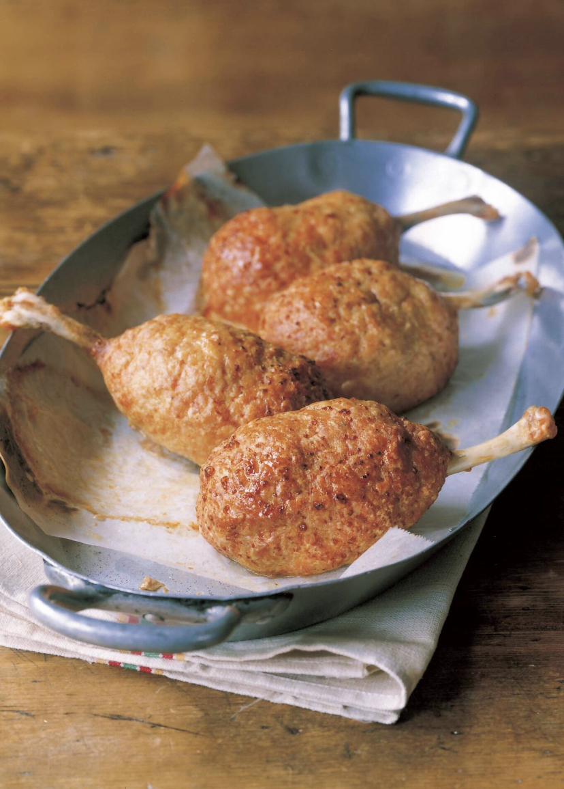

Meat on the Bone

Description
This simple, yet tasty, dish was first introduced in volume 8, chapter 69 of the manga and was the first thing that Sanji cooked for Luffy after officially becoming a member of the Straw Hat Pirates.
Ingredients
- 4 chicken drumsticks
- 4 hard-boiled eggs
- 1/4 cup of breadcrumbs
- 3 tbsp. milk
- Mixture of:
- 18 oz. (500 g) ground chicken
- 1 tbsp. salt
- 1 egg
- Pinch of black pepper
- Vegetable Oil
Steps
- Make chicken drumstick tulips by cutting the meat loose from the handle at the end of each drumstick and then roll the meat down to the bone until it is fully inside-out at the end.
- Soak the breadcrumbs in milk. Knead the mixture from the ingredients list in a bowl, then add breadcrumbs and knead again.
- Fold the meaty end of the drumstick around a hard-boiled egg. If the meat does not cover well enough, add cuts and loosen it up. Oil hands lightly and cover drumstick and egg with the mixture from the previous step.
- Bake at 400 F (200 C) for 15-20 minutes. Watch carefully.